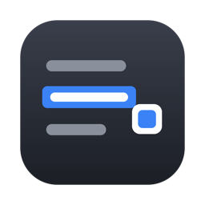

选中文字，轻点复制。
正在确认选区监听与系统权限。
关闭兼容复制后，Excel、PDF 阅读器、微信、资源管理器等不支持无障碍取词的应用可能不再弹窗。终端和 VS Code 等编辑器始终不使用兼容复制；VS Code 需把 editor.accessibilitySupport 设为 on 才能取词。
在这些应用中不显示复制浮窗。添加、移除或手动编辑后，点击“保存排除应用”生效。
尚未添加排除应用
以下应用已自动排除，无需重复添加。
以下应用只通过系统接口取词，不使用兼容复制。
不上传选中文字，不保存取词历史。